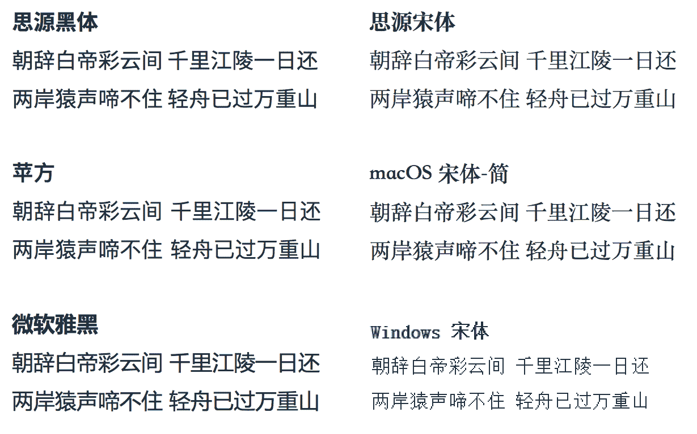
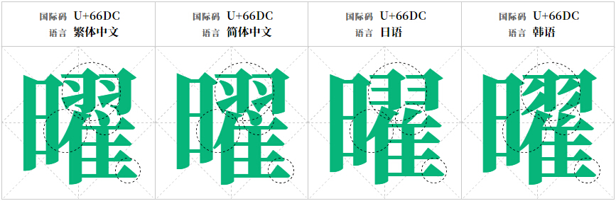
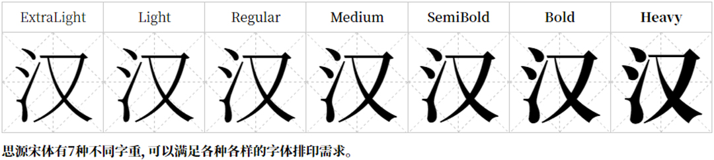
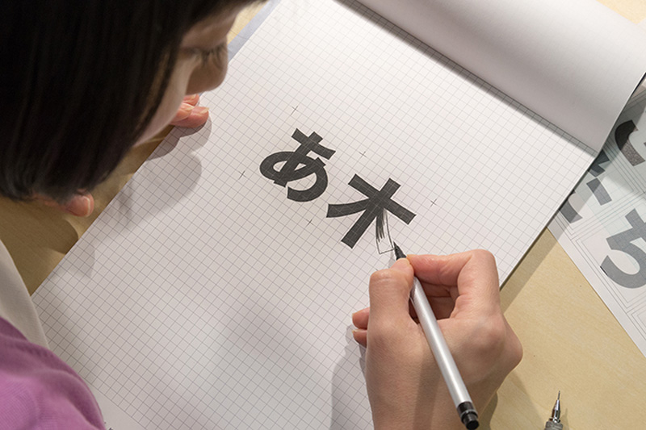

思源宋体的正确打开方式

2017年4月3日，Adobe 联合 Google 发布了思源宋体。之前思源系列字体一直被一部分设计师吐槽没有 serif 版本，这次，Adobe 在金主 Google 的帮助下，发布了思源黑体的兄弟字体思源宋体。思源系列字体一直以来的评价和可用度都非常高，也广受好评。至于想了解思源黑体的朋友可以建议阅读以下图月至设计博客中关于思源黑体的相关评论，我们直接从这次新发布的思源宋体开始聊。
思源宋体是思源黑体的兄弟字体，同样支持繁简中文、日文、韩文四种语言，同样包含七种字重，同样使用 OFL 自由授权，并在 GitHub 上开源。其中，中文部分由我国的常州华文设计，遵循 GB 18030 通用规范汉字表，包含 8105 个规范字和 196 个额外字。
作为中国的设计师，我们并不是嫌弃宋体，对于一款字体，我认为设计师没有资格嫌弃任何一款字体，一款字体一定能找到适合他的应用场景，只是你能用不到。 站在这样的角度在去看思源宋体，我认为，它对中国设计师的帮助，要明显高于思源黑体。作为一款字体，Sans 字体确实再移动互联网中应用的比较广泛，因为对于衬线字体来说，无衬线字体确实可以带来更好的阅读体验，但是字体的应用场景确实很丰富，作为思源，确实应该发布一款可以用于平面视觉，印刷制版，能突出中文之美的衬线字体。相比思源黑体这种无衬线字体，思源宋体更适合正式的文档，感觉更庄重。
思源字体与其他字体的对比
值得一提的是，这次对于金主 Google 来说，也是一件好事。对于操作系统（手机和个人电脑）并没有合适的字体来显示对应的字符，它就会被显示成「豆腐块」。Google 希望通过让开源 Noto 字体家族覆盖所有 Unicode 字符的方式来彻底告别「豆腐块」的存在，所以「思源」系列字体便是 Noto 字体家族针对中文、日文和韩文（Chinese、Japanese、Korean，CJK）的重要子集。
但是这里我认为存在一个问题，就是这款字体的名称在传播上有些别扭。由于思源字体由 Google 和 Adobe 联合开发并发行，虽说中文名称相同，但是并没有统一的英文名称。Google 将思源字体归入旗下 Noto 字体家族，因此思源黑体的名字为 Noto Sans CJK，思源宋体的名字为 Noto Serif CJK；Adobe 将思源字体归入旗下 Source 字体家族，因此思源黑体的名字为 Source Han Sans，思源宋体的名字为 Source Han Serif。这其实给使用者带来了一些问题，比如前端工程师和设计师沟通的时候，会产生一些不可预见的问题。
字体规格 首先，单单从字重上来说，就可以看出思源字体的强大，字重从 ExtraLight 到 Heavy，多达 7 种，这在汉字字体历史上前所未有的。在思源字体之前，大部分中文字体只有两个字重（常规、粗体），微软雅黑有三个字重（细体、常规、粗体）。之后发布的苹果「苹方」字体支持六个字重，也不如思源字体丰富。这让思源宋体的应用场景和可读性都大大的增加了。
对于字体来说，字形应该是比较重要的，根据思源宋体的设计师西塚涼子说，如今字体之间的沟通越来越强，同样的内容可能用于不同的语言之间，那字体的统一就变得尤为重要，在字体的设计过程中，她发现日文中的很多字，和中文是一样的（大家别喷，一个日本设计师站在日本的角度看中文，这话听起来符合「常识」），亚洲的很多文字都用通之处，这给字体设计工作带来了很多帮助。但从 Adobe 官方的介绍中可以看出，这些字体设计师对各国语言的字体都做了相应的优化。我只能感叹：牛逼的工匠！
字体设计师 西塚涼子 (Ryoko Nishizuka)
字体的使用 这次思源黑体同样给出了官方开源下载地址和字体使用指南。「思源」系列字体最显著的特征是其开源免费的授权方式，即使是商业使用也毫无限制。这种授权方式可以最大化「思源」的普及率，毕竟Google 大大在后面撑腰~值得注意的是，思源字体西文部分使用的是 Adobe Source 家族字体，因此如果想要搭配 Noto 字体家族使用，需要明确声明在西文部分使用 Noto 字体。
font-family: 'Noto Serif', 'Noto Serif CJK SC', 'Noto Serif CJK', 'Source Han Serif SC', ‘Source Han Serif’, source-han-serif-sc, serif;同样，对于前端工程师来说，也要注意代码中对于思源宋体的申明，但毕竟思源宋体刚刚发布，普及率应该很低，如果要使用，建议还是用 @font-face 自建字体链接好了，比如本文的标题就是使用思源宋体。
参考链接